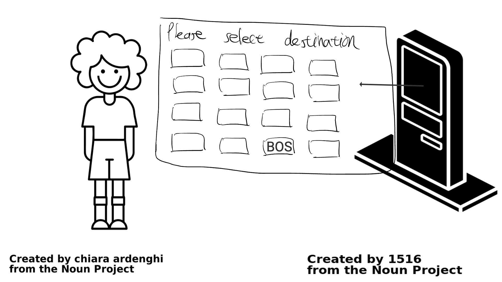

Storyboard 5.
David is trying to find his destination station in the list. There are so many stations to choose. He wants to find the right one as soon as possible since there are people waiting for him in the line. Finally he finds it in a rush.